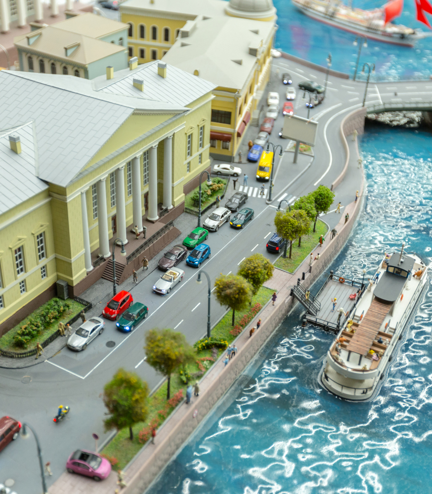

Миниатюрные макеты
любой сложности
• Мы являемся уникальными разработчиками макетов и поставщиками запчастей для создания макетов. • Работаем со всеми известными мировыми брендами. • Поможем воплотить вашу фантазию в реальность.
